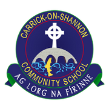

 Internationalisation @ Carrick CS
This site records all transnational collaboration undertaken
by Community School Carrick-on-Shannon, County Leitrim, Ireland.
by Community School Carrick-on-Shannon, County Leitrim, Ireland.